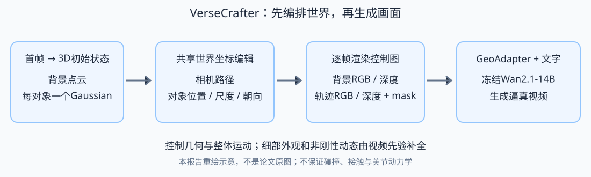
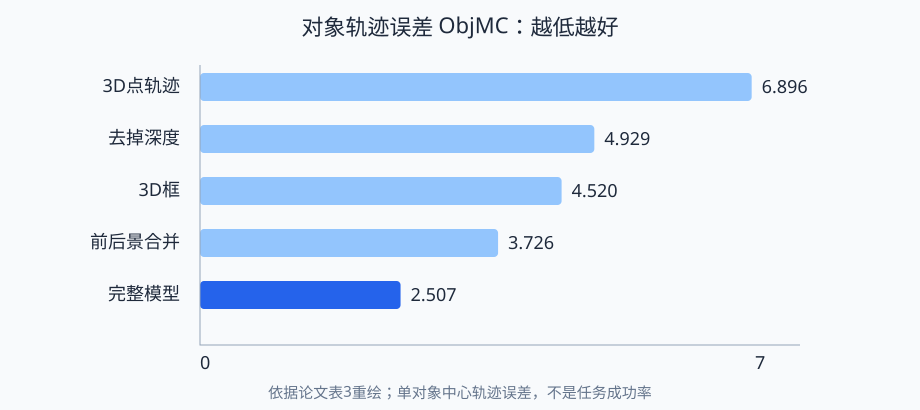

- 一句话：先在3D世界里编排“相机怎么走、多个对象怎么走”，再把这个编排渲染成视频模型能读懂的控制图。
- 痛点：画面向右移动，可能是对象向右走，也可能是镜头向左转。2D轨迹无法充分区分二者，更难在新视角下保持对象前后关系。
- 做法：静态背景点云 + 每个对象随时间变化的一个3D Gaussian；渲染背景/前景RGB与深度及编辑mask；GeoAdapter将其注入冻结的Wan2.1 T2V-14B。
- 效果：联合控制实验中，ObjMC从最佳基线Uni3C的5.883降至2.507；这衡量估计的对象中心轨迹误差，不代表完整人体动作或物理正确率。
- 价值：适合研究离线镜头预演、街区人车调度与空间教学视频。代码和权重已发布，但当前许可证禁止商业/生产用途，实际产品须另行取得授权或选择许可适合的技术实现。

VerseCrafter的关键贡献是控制接口：把背景和动态对象放到同一3D空间，以时间串联成为4D状态。每个对象只有一个Gaussian，均值给出中心路径，协方差描述大致尺寸和朝向；它既比一个点丰富，又比精细模型轻便。GeoAdapter让已有视频先验接受这些几何条件，所以粗糙椭球能变成行人、汽车等真实外观。控制的是对象整体占据与相机运动，细节仍由模型生成；“看起来真实”不能推出“动作、接触与碰撞符合物理”。
1. 问题与动机：镜头移动和对象移动要分开
给视频模型输入一张街景照片，再说“镜头右移，行人向左穿过”，往往得到视觉上合理但空间关系错误的结果。原因在于最终视频只显示投影：一个像素的位置同时取决于对象的3D位置、对象尺寸、相机位置和镜头参数。只在图上画箭头，会把这些因素混在一起。
导演不会只告诉摄影师“人物在屏幕里从这里走到那里”，还会在场地平面图上画演员路线和摄影机轨道。同一个演员路线，换一个镜头就会呈现不同的屏幕运动。VerseCrafter相当于给视频模型补上一张可编辑的空间调度图。
2D框/光流/点轨迹方便，但相机大幅移动后原有控制位置不再可靠。3D框能表达位置与尺度，却把软体和自然物体硬塞进方盒；SMPL-X具有详细人体结构，但不适合汽车、动物等任意类别。本文选择一个折中：用Gaussian的柔性空间范围表达对象，让扩散模型补全外观。
要解决的具体缺口：缺少一种紧凑、可编辑、跨类别的共同世界状态，同时承载相机和多对象运动，并能在野外真实视频上训练。它没有尝试建立完整游戏引擎，也没有从几何上精确重建全部表面。来源：论文§1。
2. 研究脉络：从屏幕约束走向统一空间状态
第一条路线以MotionCtrl、Boximator、DragAnything等为代表，直接提供轨迹、框或mask，优点是编辑直观；代价是运动常与视角绑定。第二条路线如CameraCtrl、ViewCrafter优先解决镜头控制，借助相机参数或点云稳定背景，但动态对象常处于弱控制状态。随后I2V3D、Uni3C、CineMaster等引入深度、人体模型、3D框，让对象和相机有更明确的空间联系。
VerseCrafter往前推进的一步是：背景点云、对象Gaussian和相机路径使用同一个坐标系，背景与前景又分成不同的渲染条件，避免把“相机造成的画面变化”和“对象本身的运动”混为一谈。这是表示和条件注入方式上的改进，不是从零训练新的14B基础模型。来源：论文§2。
上图表示研究问题的组织方式，不表示每条边都存在作者声明的直接继承。与4Director对照看：VerseCrafter用每对象一个软占据Gaussian，便于跨类别粗控制；4Director将对象重建为固定canonical mesh，再施加逐帧刚体变换，更强调未观察表面的跨帧几何一致性。两者都仍需生成模型补外观和非刚性动态。与Soap2Soap则属于不同层级：后者组织长视频理解、跨镜头记忆和重拍，本文是单段镜头中可控生成的底层候选。把两者接起来是系统设计设想，本文没有验证这种集成。4Director来源。
3. 方法总览：几何给结构，视频先验给质感
输入包含首帧、文字描述、希望控制的对象选择以及编辑好的相机/对象轨迹。先用MoGe-2估深度和相机内参，用Grounded-SAM2选出对象。首帧像素被反投影到3D，再分为静态背景点云和每对象点云。每个对象点云拟合一个Gaussian，用户在Blender里拖动对应椭球、设置位置/旋转/尺度关键帧。
然后以目标相机逐帧观察这个简化世界。背景渲染成RGB和深度，运动Gaussian单独渲染成RGB和深度，还产生“哪里需要生成”的软mask。四组图像条件经冻结Wan Encoder编码，mask对齐到潜空间，拼成几何特征。GeoAdapter将这些特征送入冻结Wan-DiT的部分层，结合umT5文字条件生成视频，最后由Wan Decoder解码。
不要求粗模型自己长出皮肤和衣服；让它只把空间位置、大小和遮挡交代清楚，再让已有视频模型发挥画质能力。
总览里最容易误解的是“Gaussian轨迹”：它并不是用大量3D Gaussian重建精细表面。接下来从一个像素和一个对象开始，把这个控制接口拆开。
4. 符号表
| 符号 | 含义 | 维度 / 取值 |
|---|---|---|
| $t,T;o$ | 视频帧索引、总帧数；对象索引 | $1\le t\le T$；默认$T=81$ |
| $\mathbf u,D_1,\mathbf K$ | 齐次像素坐标、首帧深度、相机内参 | 3维；像素标量深度；$3\times3$ |
| $\mathbf R_t,\mathbf t_t$ | 世界到相机的旋转和平移 | $3\times3$、3维 |
| $M_o,P_o,N_o$ | 对象mask、对象点云、点数量 | 二维区域；$N_o$个3D点 |
| $P^{bg},N_{bg}$ | 静态背景点云及数量 | $N_{bg}\times3$，另附颜色 |
| $\mathcal G_o^t,\boldsymbol\mu_o^t,\mathbf\Sigma_o^t$ | 对象Gaussian、中心、协方差 | 3D分布；3维；$3\times3$ |
| $\mathbf x_{o,k},\mathbf x$ | 对象第$k$个3D点；空间查询点 | 3维 |
| $M_t,\hat M,E$ | 生成软mask、潜空间对齐mask、Wan Encoder | $H\times W$；对齐张量；冻结网络 |
| $\mathbf g,\mathbf x_n,L,D$ | 几何token、主干第$n$层token、token数、宽度 | 两种token均$L\times D$；$D=5120$ |
| $\mathcal B_n,\mathcal A_m,\mathbf W_0^{(m)}$ | 冻结主干block、对应GeoAdapter block、零初始化输出投影 | token变换；$D\times D$投影 |
| $z_0,z_1,z_\tau,\tau,v_\theta,c$ | 干净潜变量、Gaussian噪声、插值状态、噪声时间、速度预测器、条件 | 潜视频张量；$\tau\in[0,1]$；$c$含文本/几何 |
| $d(o,k),d_o,N_{gt},N_{pred},\lambda$ | 轨迹距离、匹配后误差、真值/预测对象数、漏检罚项 | 距离；整数；$\lambda=10.0$m |
注意视频帧$t$与生成过程的噪声时间$\tau$不同。下文把论文附录GeoAdapter block符号重命名为$\mathcal A_m$，避免与对象Gaussian $\mathcal G_o^t$混淆。
5. 方法详解：从像素到可控视频
5.1 把首帧变成共同世界坐标
深度告诉我们“这个像素离镜头多远”，内参告诉我们“它沿哪条视线射出去”。两者结合，像素才能变成可从别的机位观察的3D点。
- 是什么
- 论文式(1)，将首帧像素反投影到世界坐标。
- 逐符号
- $\mathbf u=(u,v,1)^\top$；$\mathbf K^{-1}\mathbf u$是相机射线；$D_1$提供深度；$\mathbf R_1^\top$和$\mathbf t_1$逆转相机外参。以首帧为世界参考时$\mathbf R_1=\mathbf I,\mathbf t_1=\mathbf0$。
- 为什么
- 各对象和镜头必须在同一参照系中移动；否则“相机右移1”和“对象右移1”没有共同意义。
背景不应该跟着演员走，所以先把被选对象的像素从背景里扣出来。
- 是什么
- 合写论文式(2)(3)：按对象mask把点云分成可动对象与固定背景。
- 逐符号
- $M_o$是对象$o$的二维区域，$P_o$收集其3D点；$\bigcup_oM_o$是所有被控对象的区域，剩余点属于$P^{bg}$。
- 为什么
- 相机变化时只需重投影固定背景；对象移动则独立改变对象条件，避免把行人位移误解为整片街景位移。
这里的固定背景来自首帧，未见到的墙背面和物体后方没有完整点云。新视角出现这些区域时需要生成模型补全，不能当作实测几何。来源：论文§3.1。
5.2 一个Gaussian表示一个对象的粗占据
只给中心点，模型不知道车有多大；给精细网格又增加重建门槛。Gaussian像一个软边界椭球，能同时表达中心、长宽高方向和空间范围。
- 是什么
- 论文式(4)：每个对象在每帧有一个3D Gaussian，串成轨迹。
- 逐符号
- $\boldsymbol\mu_o^t$给出中心位置；$\mathbf\Sigma_o^t$是完整协方差，其特征向量决定主轴方向，特征值决定各轴扩展程度；$\mathbf x$是3D空间位置。
- 为什么
- 软占据比硬框更适合自然物体；保留协方差比单点多了尺度和朝向信息。不需要按“人”“车”选择不同参数模型。
初始化时不用手工测量尺寸，把选中点云的平均位置和分散程度直接算出来即可。
- 是什么
- 论文式(5)，对对象点云拟合全协方差Gaussian。
- 逐符号
- $N_o$为对象点数量，$\mathbf x_{o,k}$为第$k$个点；外积累计点在各方向的分散与相关性。
- 为什么
- 若物体斜放，对角协方差无法表达倾斜主轴，完整协方差可以。这里采用$1/N_o$，是分布拟合，不是用$1/(N_o-1)$做无偏样本协方差估计。
用户在Blender中看到的椭球只是编辑界面；修改位置、旋转和尺度后映射回Gaussian参数。控制图由底层Gaussian渲染，不能误写成“直接渲染椭球网格作为全部条件”。一个Gaussian也不等于精细3DGS模型：它没有把手、关节、面孔、衣褶等结构。有了可编辑的世界状态，下一步要把它翻译成视频模型熟悉的图像条件。
5.3 五类控制图：深度和前后景拆分各司其职
把演员和布景画在同一张图上，模型很难知道谁在动。把二者分层，再加上距离信息，就像给动画师提供分层分镜和景深说明。
| 控制通道 | 来自哪里 | 解决什么 |
|---|---|---|
| 背景RGB、背景深度 | $P^{bg}$按目标相机投影 | 建筑纹理/几何、视差和镜头运动 |
| 轨迹RGB、轨迹深度 | Gaussian投影成软椭圆足迹，深度来自对应椭球表面 | 对象占据范围、移动路径、尺度和前后关系 |
| 软合并mask $M_t$ | 反转背景可见性，与对象足迹合并并平滑 | 哪里需要合成或覆盖 |
首帧将背景RGB替换为完整输入图，设$M_1=0$，为保持起始内容提供条件。相机只控模式把轨迹RGB/深度置零，但新视角仍可能产生非零mask；只控对象模式则固定相机。联合控制时，五类图都来自同一世界状态。RGB告诉模型“是什么样的”，深度告诉模型“谁在谁前面”，拆分通道告诉模型“谁是背景、谁受独立控制”。
5.4 GeoAdapter：冻结大模型，逐层注入几何
已有模型会画真实视频，却没有理解这套控制图。GeoAdapter类似可训练的翻译支路；输出投影从零开始，使刚接入时不会突然破坏主干的生成能力。
- 是什么
- 论文附录式(9)的等价记号：冻结主干结果加上几何残差。
- 逐符号
- $\mathcal B_n$为Wan-DiT第$n$个block；$\mathbf x_n$为视频token；$\mathbf g$为几何token；$\mathcal A_m$为配对GeoAdapter block；$\mathbf W_0^{(m)}$为可训练输出投影，初值为零。
- 为什么
- 当$\mathbf W_0^{(m)}=0$时新增项为零，初始行为等于原主干。训练逐步学会如何把几何条件送入视频生成过程。
- 直觉
- 保留基础模型的画质能力，训练的是把几何变成有效指令的接口。
四组RGB/深度图通过同一个冻结Wan Encoder编码。mask先按空间步长$8\times8$折到64个通道，再沿时间对齐到潜空间（时间步长4），随后与图像潜变量拼接、patchify。主干40层、隐藏宽5120，在索引0、5、10、15、20、25、30、35处注入，共8个GeoAdapter block，初始化来自对应Wan层。文字经umT5同时进入主干和适配分支。来源：附录B，表4及式(9)。
深入：生成目标属于背景知识，不能当作新贡献
视频潜变量被逐步加入噪声，模型学习反向恢复。flow matching把这个过程看作从噪声到真实视频的连续路径，几何和文字负责告诉恢复过程该走向哪种视频。
- 是什么
- 论文附录A式(8)的flow-matching背景表达；$z_0$是干净视频潜变量，$z_1$是Gaussian噪声，$\tau$为插值时间，$v_\theta$预测速度，$c$为条件。
- 为什么
- 平方误差让预测速度逼近噪声与干净潜变量间的方向。本文创新是$c$如何由几何产生并注入；Wan主干本身仍冻结。
附录也给出DDPM加噪及噪声预测式(6)(7)，它们是通用预备知识。不能把通用噪声预测公式写成“VerseCrafter提出的Gaussian轨迹损失”，也不能据此断言发布代码采用完整DDPM训练。
6. 走一遍例子：仓库通道中行人和车错身
下面是教学计算和产品设想，不是论文实测样例。只用3个关键时刻展示坐标关系，实际默认生成81帧；数值假定统一距离单位，现实单图估深不保证精密计量。
- 输入：一张仓库通道照片，选中行人与车辆。设内参$f_x=f_y=1000$、主点$(640,360)$；相机位姿为单位旋转和零平移。像素$(840,360)$深度5，反投影得到$(1,0,5)$，因为$(840-640)\times5/1000=1$。
- 拆背景与对象：地面、货架留下作为背景点云。行人点云平均中心设为$(1,0,5)$，协方差设$\mathrm{diag}(0.09,0.64,0.09)$；其空间标准差为$(0.3,0.8,0.3)$，表示纵向更长的软占据，并非精准人体表面。
- 编排对象：行人中心三个时刻为$(1,0,5)$、$(0,0,5)$、$(-1,0,5)$。车辆可沿另一条路径前进；如果需要避免碰撞，应由外部规则审查两条路径，本文模型不会自动保证安全距离。
- 同时移动镜头：相机中心从世界$x=0$移到$x=0.5$，在相同旋转下世界到相机平移为$(-0.5,0,0)$。此时若行人中心在$(0,0,5)$，投影横坐标为$640+1000(-0.5)/5=540$。这说明即使对象保持世界中心不变，相机变化也会改变屏幕位置。
- 渲染条件：货架点云形成背景RGB/深度；人物与车辆Gaussian形成独立轨迹图；二者前后关系由深度体现。首帧mask为0，未来帧编辑区域和新暴露背景允许合成。
- 生成及验收：GeoAdapter把控制图转成残差，Wan生成衣着、轮子、步态等细节。验收要分别看相机路径、对象路径、身份、遮挡和物理接触；“轨迹走对”不能替代“轮胎滚动正确”“脚没有穿地”。
这个例子展示了接口能表达什么；下面的实验检验它在论文数据分布上是否比其他控制方式更有效。
7. 实验：画质与控制要同时看
数据：VerseControl4D由Sekai-Real-HQ和SpatialVID-HQ构建，35,000训练、1,000验证；训练20%静态场景，验证包含250个静态样本供相机单控评估。先切成81帧视频，再筛掉对象过多、主体过大、人体严重截断、模糊或曝光差的片段。保留1–6个可控对象，单对象mask面积不超过20%。这使评估更接近街景中较小、可分离的前景对象，不等于各种工业特写都已覆盖。
指标：VBench-I2V衡量多维视频质量；RotErr和TransErr从生成视频重新估计相机，与目标比较；ObjMC重新估计对象Gaussian中心轨迹。后两类指标依赖几何估计器，其误差不等同于真实传感器测量。数据来源§4，实验来源§5、表1–3。
7.1 联合相机与多对象控制（表1关键列）
先看右边三个误差，越低越服从控制；再看Overall，确认控制提升没有以明显损失总体画质为代价。下表为原表关键列摘录，不是另做实验。
| 方法 | Overall ↑ | Imaging ↑ | Dynamic ↑ | RotErr ↓ | TransErr ↓ | ObjMC ↓ |
|---|---|---|---|---|---|---|
| Perception-as-Control | 83.66 | 66.81 | 73.91 | 5.006 | 8.767 | 6.556 |
| Yume | 85.47 | 71.16 | 72.24 | 7.560 | 8.735 | 7.959 |
| Uni3C | 83.55 | 68.06 | 66.09 | 1.361 | 7.731 | 5.883 |
| VerseCrafter | 88.10 | 72.70 | 86.26 | 0.890 | 3.103 | 2.507 |
相对各控制误差列中最佳基线Uni3C，旋转误差下降约34.6%，平移误差约59.9%，对象轨迹误差约57.4%；这是本报告按表值计算的相对降幅。Overall相对最高基线Yume增加2.63分。不能说所有子项都第一：Motion Smoothness为98.79，Yume为98.96、Uni3C为98.94。
7.2 静态场景的相机控制（表2关键列）
| 方法 | Overall ↑ | Imaging ↑ | Aesthetic ↑ | RotErr ↓ | TransErr ↓ |
|---|---|---|---|---|---|
| ViewCrafter | 84.04 | 69.56 | 55.52 | 2.101 | 9.868 |
| Voyager | 78.12 | 55.48 | 49.80 | 3.557 | 3.880 |
| FlashWorld | 85.33 | 71.68 | 58.74 | 1.792 | 3.257 |
| VerseCrafter | 86.80 | 74.57 | 54.78 | 0.650 | 2.587 |
镜头控制更准确，但Aesthetic低于FlashWorld，不能把“总体表现最好”扩大为所有维度无代价获胜。相机实验的数据子集与联合控制不同，两表数值不宜直接比较。
7.3 消融：Gaussian、深度、通道拆分分别有用吗？
| 变体 | Overall ↑ | RotErr ↓ | TransErr ↓ | ObjMC ↓ |
|---|---|---|---|---|
| 对象用3D框 | 85.45 | 1.350 | 3.805 | 4.520 |
| 对象只用3D点轨迹 | 85.57 | 1.298 | 3.281 | 6.896 |
| 去掉深度 | 85.64 | 1.177 | 3.900 | 4.929 |
| 前景背景合并 | 85.72 | 1.080 | 3.803 | 3.726 |
| 完整设计 | 88.10 | 0.890 | 3.103 | 2.507 |
单点ObjMC最高，说明只告诉模型中心位置，仍容易出现尺度和整体占据漂移；去掉深度，前后关系更难稳定；合并前后景通道，模型更难判断运动来源。消融共用训练数据、主干和优化设置，差别集中在控制设计，因此比跨模型比较更能支持这些组件的必要性。它没有证明Gaussian在所有类别或所有分辨率上都优于网格。
深入：ObjMC如何处理多对象与漏检
先给生成结果中的对象与目标对象配对，再计算路径差；如果目标对象消失，不能简单忽略它，否则少生成对象反而容易得高分。
$\hat{\boldsymbol\mu}_k^{(t)}$是预测对象$k$的中心，$\boldsymbol\mu_o^{(t)}$是目标对象$o$的中心。先以$d(o,k)$构建代价矩阵，通过Hungarian匹配得到一对一对应；匹配对象的$d_o$为轨迹距离，未匹配对象的$d_o=\lambda=10.0$m。对应论文式(13)–(15)。这评估中心路径，未直接测完整协方差、部件姿态、脚步或接触。
相机RotErr是各帧旋转角误差之和，TransErr是各帧平移向量欧氏差之和（附录式11、12），不是逐帧平均，也不能把表中数值直接读成平均米数。
7.4 训练与推理成本：适配器轻，不等于整个系统轻
训练使用16张96GB GPU、global batch16；先480P训练2,500步，再720P训练2,500步，总墙钟约380小时。Adam学习率$2\times10^{-5}$、100步warmup；文本以0.1概率丢弃。论文主实验推理50步、CFG5.0；README示例使用30步，两者不要混写成同一设置。
| 50步推理设置（附录表6） | 峰值每卡显存 GB | 纯扩散推理 秒 |
|---|---|---|
| 基线 | 90 | 866 |
| + FSDP | 70 | 870 |
| + FSDP + CPU offload | 57 | 880 |
81帧720P在8×96GB GPU上端到端约1152秒；附录表7拆成几何构建约23秒、控制渲染60秒、模型加载203秒、50步扩散866秒。缓存几何与模型加载后仍需重渲染和采样，不能说重复编辑只需23秒。附录30步采样约715秒，是吞吐优化空间，但远离实时。来源：附录G及表6、7。
8. 结果可视化：先看最能检验设计的差异

看官方视频时，可以按三个问题核对：镜头转动时建筑直线是否弯曲；两个人错身时前后顺序是否连续；目标对象是否始终沿规定路径，而非只在最终位置碰巧对齐。论文图6比较点/框/Gaussian，图7检查深度产生的遮挡关系，图8检查通道拆分。
特别建议同时看附录图15、16的边界案例：汽车的椭球朝向容易控制，但近对称人体朝向可能失败；流水与风吹草地能生成合理视觉动态，瀑布这类高频非刚性背景可能运动不足；多视图比单图补全更可靠。这里提供原文对应章节，没有把文字分析冒充重新运行模型的输出。
9. 局限与商业迁移
9.1 几何一致性与物理真实性是两层验收
- 只有对象级粗控制：单Gaussian没有手指、骨骼、铰链。可以控制机械臂整体占据变化，不能保证每个关节角正确；不适合直接生成严格的设备拆卸演示。
- 朝向可能不充分：人体横截面近对称时，绕长轴转动几乎不改变投影足迹和深度，模型可能仍朝错方向。汽车等强各向异性对象更容易得到明确旋转信号。
- 背景基本静态：风、流水等动态由视频先验补，不是显式逐帧场景几何；瀑布等高非刚性动态控制较弱。
- 未观测区域会猜：单图后方没有数据，模型能画合理背面，不保证和真实物体一致。多视图重建改善覆盖，但增加采集与处理成本。
- 不施加物理约束：没有显式碰撞、接触、重力或地面约束，路径正确仍可能出现穿地、滑脚和不合理互动。
- 算力与长度：高分辨率多通道编码和14B生成成本高，当前默认81帧；更长镜头、低延迟、接缝衔接需要进一步研发。
这些边界来自作者附录H及附录F的分析；不是泛泛说“仍有提升空间”。
9.2 哪些小众场景值得迁移？
以下为本报告的商业推断，论文未做客户试点、付费测试或ROI实验；现有发布资产禁止商用，因此应视为研发方向。
| 潜在场景 / 买方 | 为什么需要几何控制 | 最小产品与验收 | 主要缺口 |
|---|---|---|---|
| 文博历史街区镜头预演 / 展陈制作方 | 固定建筑空间下反复改变参观镜头和人流 | 少量授权场景、三类镜头模板；建筑结构和路线由策展方审核 | 历史真实性、未见背面、资产授权 |
| 物流仓储盲区安全情景 / 培训供应商 | 改变行人与叉车路径，展示不同机位的遮挡 | 离线生成错误/正确路径对照；审核安全距离和物理接触 | 车辆控制精度、碰撞规则、工服与设备身份 |
| 小型实景剧场走位预演 / 导演及舞台团队 | 多个演员和摄影机路径必须统一编排 | 输出粗走位短片，供沟通镜头；不替代精确舞台工程图 | 人体朝向、角色一致性、跨镜头连续性 |
| 商业物业新员工空间认知 / 物业与培训机构 | 同一路线生成多观察角度，表达人员移动与静态地标 | 审核后的固定路线视频，重点核对门牌/出口和指示 | 字牌幻觉、真实空间测量与新视角验证 |
这些用途真正购买的是“可审核的空间沟通素材”。路径模板与几何状态可复用是潜在效率来源；现有推理成本意味着应先做离线内容生产，不能直接包装成实时交互世界。若要与Soap2Soap连接，需要把它的镜头计划转换成相机/Gaussian轨迹，再额外处理跨镜头身份和声音；这是一条待验证的工程路线。
10. 常见疑问
一个Gaussian这么粗，为什么能生成真实行人？
Gaussian只限定大致位置、大小和运动，真实形状、衣服、步态由Wan视频先验补。粗控制接口与复杂生成先验分工不同。外观逼真不证明关节或足底接触精确。
是否等于3D Gaussian Splatting重建再渲染？
不是。这里每对象一个Gaussian表达软占据，背景为点云；最终视频由视频生成模型产生，并非直接把精细3DGS纹理渲染成结果。
能精确控制人脸朝向或机器关节吗？
当前不能这样承诺。协方差能提供椭球级朝向，对近对称主体可能产生歧义；部件级姿态应增加骨架、多个Gaussian或更明确3D结构，论文把它列为后续方向。
与4Director如何选？
先问需要多精细的几何身份。粗路径与软占据是VerseCrafter的接口；固定canonical mesh和逐帧刚体变换是4Director的接口。后者强调跨视角对象完整几何，前者避免强类别模板。实际选型还要核对算力、许可证和目标域实验，不能凭各自论文中不同数据上的分数横向定胜负。
有权重，是否能马上接到收费产品？
当前官方许可证明确禁止商业和生产用途。权重公开只解决可获取性，未提供商用授权。商业迁移需另行谈授权，或用许可合适的资产独立实现并做验证。
11. 复现指南：能下载、能推理、能复表是三个层次
以下根据官方README整理，仅作命令参考，本报告没有clone、安装或运行论文代码。截至2026-10-12，仓库已发布推理、训练和数据处理代码，权重在TencentARC/VerseCrafter。训练/测试CSV不随仓库发布，批量推理脚本仅输出视频与对比网格，不计算论文定量指标；不能把“跑了batch inference”写成“复现了表1”。
11.1 安装环境与权重
在GPU服务器执行；Python3.11、PyTorch2.3.0、CUDA12.1为README指定环境。下面把原README零散目录切换整理为从仓库根目录可连续执行的版本，末尾回到仓库根。FlashAttention和PyTorch3D含本地编译，不能把Apple笔记本视为默认推理硬件。
git clone --recursive https://github.com/TencentARC/VerseCrafter.git
cd VerseCrafter
conda create -n versecrafter python=3.11 -y
conda activate versecrafter
conda install pytorch==2.3.0 torchvision==0.18.0 torchaudio==2.3.0 pytorch-cuda=12.1 -c pytorch -c nvidia -y
pip install -r requirements.txt
pip install git+https://github.com/microsoft/MoGe.git
cd third_party/Grounded-SAM-2
pip install -e .
pip install --no-build-isolation -e grounding_dino
cd ../..
pip install flash-attn --no-build-isolation
git clone https://github.com/facebookresearch/pytorch3d.git
cd pytorch3d
pip install --no-build-isolation .
cd ..
pip install --upgrade huggingface_hub
mkdir -p model
hf download --local-dir model/VerseCrafter TencentARC/VerseCrafter
hf download --local-dir model/Wan2.1-T2V-14B Wan-AI/Wan2.1-T2V-14B
cd third_party/Grounded-SAM-2/checkpoints
bash download_ckpts.sh
cd ../gdino_checkpoints
bash download_ckpts.sh
cd ../../..11.2 最少交互上手：Blender插件 + GPU服务
前提：完成上面安装和下载；Blender4.0+，官方推荐4.5+；GPU服务器按README默认8卡。它会启动服务，生成视频还需下面三步界面操作。
# 在仓库根目录，打包后复制到运行Blender的机器
zip -r blender_addon.zip blender_addon/
# 在GPU服务器的仓库根目录启动
python api_server.py --port 8188 --num_gpus 8- Blender → Edit → Preferences → Add-ons → Install from Disk，安装zip并启用“VerseCrafter Workflow”。
- 按N打开VerseCrafter侧栏，填GPU服务URL并测试连接；选输入图、工作目录、对象prompt，点击Run Preprocessing。
- 编辑相机/椭球路线，Export Trajectories；输入视频文字prompt，Generate Video。
详见官方插件说明。这里选择官方推荐交互路径，避免把手工编辑Blender的必要步骤伪装成一条自动命令。
脚本路径：预处理 → 人工编辑 → 渲染 → 推理
以下将README示例中变量改成任务专属名称，命令参数不变。从仓库根目录设置：
VC_INPUT=demo_data/y57HgqX1uGc_0039750_0041550_0000635_0000716/0001.jpg
VC_OUTPUT=demo_data/y57HgqX1uGc_0039750_0041550_0000635_0000716
python inference/moge-v2_infer.py -i "$VC_INPUT" -o "$VC_OUTPUT/estimated_depth" --maps
python inference/grounded_sam2_infer.py \
--image_path "$VC_INPUT" --text_prompt "person . car ." \
--output_dir "$VC_OUTPUT/object_mask" --min_area_ratio 0.003 --max_area_ratio 0.2
python inference/fit_3D_gaussian.py \
--image_path "$VC_INPUT" --npz_path "$VC_OUTPUT/estimated_depth/depth_intrinsics.npz" \
--masks_dir "$VC_OUTPUT/object_mask/masks" \
--output_dir "$VC_OUTPUT/fitted_3D_gaussian"此时必须进入Blender：修改inference/blender_script/build_4d_control_scene.py与export_blender_custom_trajectories.py的ROOT_DIR为输出目录绝对路径，运行建场景脚本，设81帧并编辑相机与椭球关键帧，然后运行导出脚本，产生custom_camera_trajectory.npz和custom_3D_gaussian_trajectory.json。再运行：
python inference/rendering_4D_control_maps.py \
--png_path "$VC_INPUT" \
--npz_path "$VC_OUTPUT/estimated_depth/depth_intrinsics.npz" \
--mask_dir "$VC_OUTPUT/object_mask/masks" \
--trajectory_npz "$VC_OUTPUT/camera_object_0/custom_camera_trajectory.npz" \
--ellipsoid_json "$VC_OUTPUT/camera_object_0/custom_3D_gaussian_trajectory.json" \
--output_dir "$VC_OUTPUT/camera_object_0/rendering_4D_maps"
torchrun --nproc-per-node=8 inference/versecrafter_inference.py \
--transformer_path model/VerseCrafter --num_inference_steps 30 \
--sample_size "720,1280" --ulysses_degree 2 --ring_degree 4 \
--prompt "Two pedestrians walk along a sunlit street with parked cars." \
--input_image_path "$VC_INPUT" --save_path "$VC_OUTPUT/camera_object_0" \
--rendering_maps_path "$VC_OUTPUT/camera_object_0/rendering_4D_maps"最后prompt为本报告缩短的示例文本，应按实际场景修改；其余启动参数依据README。README脚本采用30步，复核论文主表时需以论文50步/CFG5.0等设置为准。
11.3 数据构建与训练
原视频分别在Sekai与SpatialVID-HQ获取。仓库提供构建脚本，不等于提供已打包好的完整VerseControl4D及固定CSV。先下载原数据、配置外部预处理路径，确保ffmpeg/ffprobe在PATH中：
git submodule update --init --recursive
cd data_processing
SPATIALVID_ROOT=/path/to/SpatialVID-HQ bash build_versecontrol4d_spatialvid.sh
SEKAI_ROOT=/path/to/sekai-codebase bash build_versecontrol4d_sekai.sh
cd ..上述/path/to/...必须替换成实际路径。当前README把深度/相机预测交给外部TAPIP3D生成*_depth_pose.npz；论文§4描述的是MegaSAM并替换MoGe-2/UniDepthV2模块。两者属于论文流程与后续发布实现的差异，严格复表时应记录具体commit、估计器版本与数据筛选，不能默认完全相同。
每条视频要有background_RGB.mp4、background_depth.mp4、3D_gaussian_RGB.mp4、3D_gaussian_depth.mp4、merged_mask.mp4。自建合并训练CSV至少包含clipPath、crowdDensity和qwen_prompt或prompt。编辑train/train.sh内环境、模型路径、CSV与数据根目录，再执行：
conda activate versecrafter
bash train/train.sh训练入口train/train.py，通过Accelerate和DeepSpeed ZeRO-2启动；--trainable_modules=geoada只训练适配器，VAE、文本encoder和Wan主干冻结。默认输出results/exp_ours_14B，自动从latest恢复。多机需按README分别设置MASTER_ADDR、MASTER_PORT、WORLD_SIZE、NUM_PROCESS、RANK。
11.4 批量推理与复表检查
# 先按自己的路径与CSV修改对应脚本中的占位符
bash batch_inference/run_batch_inference_sekai.sh 0
bash batch_inference/run_batch_inference_spatialvid.sh 0输出包含{clip_stem}_generated.mp4与3×3对比网格{clip_stem}_comparison.mp4。要复表还需补上VBench-I2V、相机重估与Gaussian轨迹匹配评估，核对是否使用相同验证split、分辨率、采样步数、提示、基线输入及漏检罚项。官方README明确批量推理部分不计算定量指标。
| 资源 / 工程位置 | 作用及状态 |
|---|---|
| 官方仓库 | 推理、训练、数据处理均已发布；核验时441 stars，随时间变化 |
| 模型权重 | 官方可下载；另需Wan2.1基座及分割权重 |
| inference/ · blender_addon/ | 单场景处理、人工编辑轨迹、渲染与生成 |
| data_processing/ · train/ | 数据构建与训练；原始数据、外部预处理、CSV需自行准备 |
| batch_inference/ | 视频生成及可视对照，未包含完整定量复表闭环 |
| 官方issues | 复现时检查编译、多卡与路径问题；本报告未把未逐条核验的issue描述为已证实bug |
实际起步门槛：论文测量环境是8×96GB推理、16×96GB训练；附录报告offload降至57GB每卡，但没有由此证明任意57GB卡配置都能直接用README默认脚本跑通。PyTorch3D/FlashAttention编译、Blender绝对路径、分割mask质量、几何单位、预处理版本和缺失CSV是应优先核对的环节。Hugging Face自动展示的通用DiffusionPipeline片段未包含完整几何控制流程，优先使用官方README入口。
12. 术语表
- 4D Geometric Control
- 在共享3D坐标中表达场景与对象状态，再按时间串联的可编辑控制表示。
- Gaussian occupancy
- 用概率分布表达对象大致占据空间；软范围不是精确碰撞表面。
- Covariance / 协方差
- 控制Gaussian空间扩展与主轴方向的矩阵。
- GeoAdapter
- 把渲染几何条件送入冻结Wan主干的可训练分支。
- Canonical mesh
- 保持一致身份和形状的参考网格；4Director的重要控制资产。
- Parallax / 视差
- 相机移动时不同深度结构在画面上产生不同位移。
- World-to-camera extrinsics
- 把世界点转换到相机坐标的旋转和平移；相机中心右移不等于平移参数同号右移。
- ObjMC
- 对生成视频重新估计的对象中心轨迹误差，包含多对象匹配与未匹配罚项。
- FSDP / CPU offload
- 参数分片与部分数据移到CPU，减少每卡显存占用但可能增加开销。
- 物理真实性
- 碰撞、接触、重力与动力学等一致性；不同于仅保持几何轨迹和视觉合理。
报告原始信息以arXiv v2全文、作者仓库、官方模型卡及项目页为准；教学例子、商业迁移和跨论文集成为本报告分析，均未声称已被论文验证。